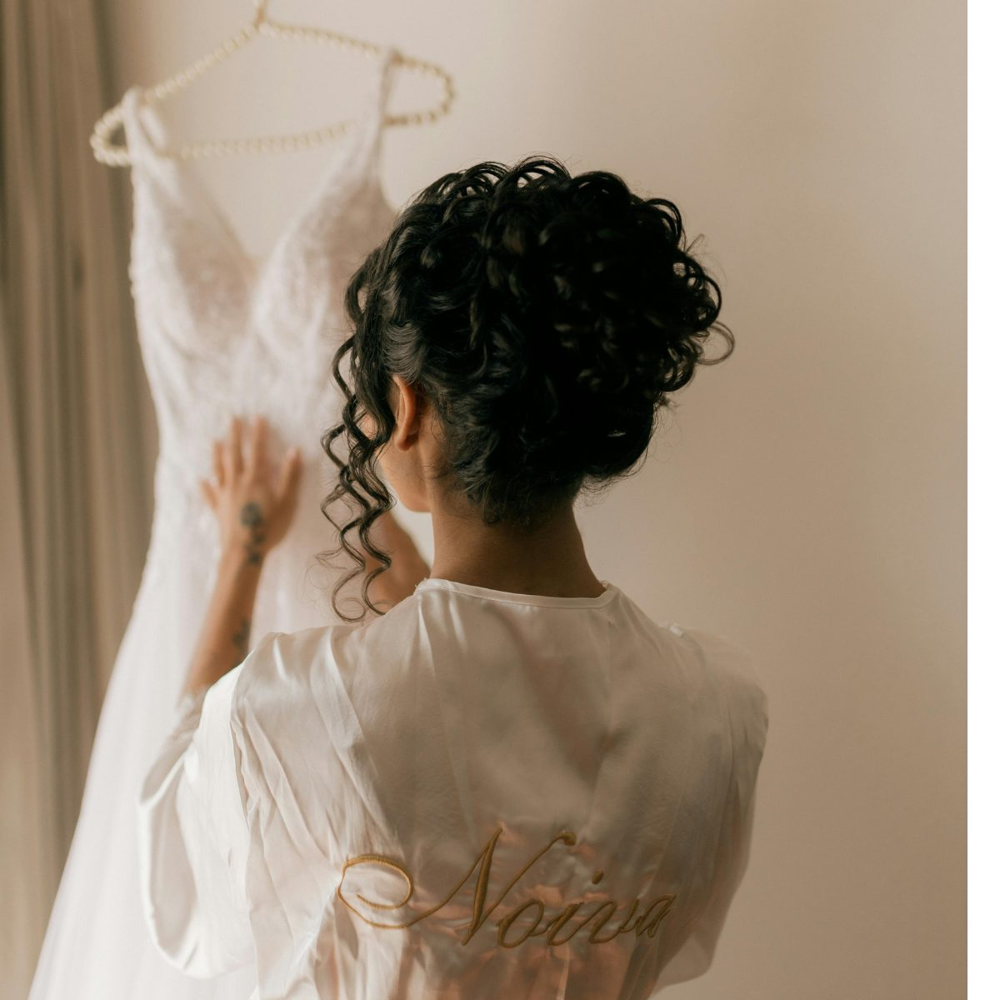

Wedding gowns, eveningwear and delicates
Cleaning, restoration and preservation through our bridal arm, Bridal Silver Service — more than twenty years in this one specialty. Sydney and Melbourne designers send us their clients, and their own sample garments. Beading, crystals and sequins are handled by hand where the fabric asks for it.
Complimentary pick-up and drop-off across most of Sydney, including collection from your honeymoon hotel, so the gown is sorted before you fly out.